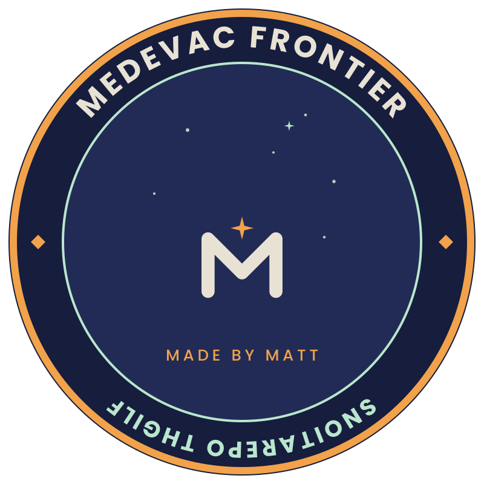

Classroom use
Age: 14–16
Duration: 15–30 minutes
Mode: individual or pairs

A Made by Matt simulation
Land. Extract. Get airborne.
Teacher information
Players control a short-take-off-and-landing aircraft through approach, landing, casualty extraction and take-off. The experience rewards control, timing, judgement and improvement across repeated attempts.
Age: 14–16
Duration: 15–30 minutes
Mode: individual or pairs
Arrow keys or WASD. Touch controls are available on compatible screens.
Reduced motion, clear phase prompts, retry routes and instructions that do not rely only on colour.